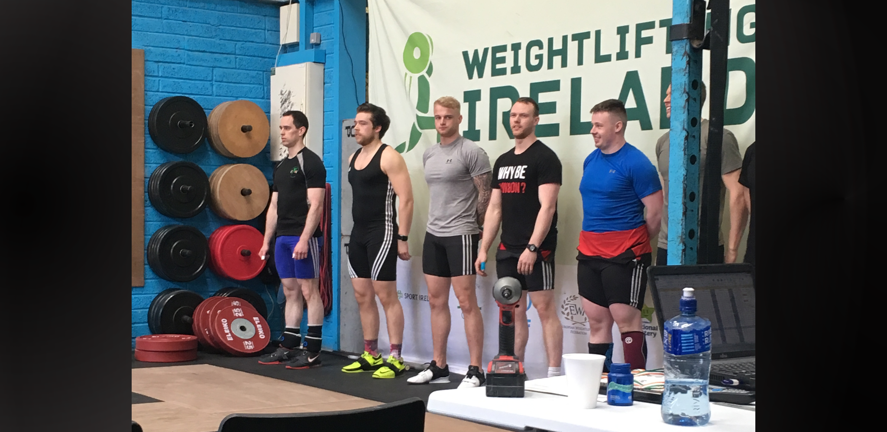

A First Taste of Iron

When I walked in the door of the gym this time one year ago, I never could have imagined I would be here, now,
in this moment. Hands chalked... heart pounding... a heavy buzz and the beaming lights imprudently tried to distract me from
the task at hand. I would not be easily distracted.
The journey to this point started about one year ago. I used to train up in Galway City Gym until I started my
job in OnePageCRM, since they started paying for my membership in the Kingfisher. In this time I had seen some
people training olympic weightlifting and I had always admired how fast and impressive it looked.
I don't know why I never took the leap to try it, but as luck would have it my friend who worked in Galway City
Gym told me that Mike Conroy was giving a four week crash course in olympic weightlifting for members of the
gym. I asked the manager (a close family friend) if I could go to the classes and pay the day rate for the four
weeks.
It certainly wasn't so fun at the start though. Actually it was quite embarrassing. We started with an overhead
squat with a wooden technique bar. I was just about to turn 24 years old, and my mobility was nothing short of
atrocious. I was tight in the ankles, hips and shoulders. So as I started to get lower, the bar would start to
fall forward as I could not keep my spine properly extended.
My first taste of technique was the power clean. Mike taught us in a number of steps which we later performed
sequentially to form a (not so pretty) power clean. I power clean and pressed 60kg for a triple by the end of
the 4th week.
It was very obvious that I needed a lot of work to be able to get into the right positions, and to do so with
tension and control would add another layer of difficulty in itself. But not only this, I would have to learn
and practice the technique of weightlifting and get as strong as I possibly could.
At this point in time, I knew this was something that I really enjoyed. Of course I knew it would be hard to
improve, and to make it to any decent level would require incredible hard work and sacrifice, but that didn't
make me want to do it any less. I had begun to see myself as a weightlifter even though I had only been
training a short amount of time.
After the four week course, I sought out the help of another expert olympic weightlifter, and my soon to be
coach, Kevin D'Arcy. He helped my refine what I had learned in the Clean & Jerk, and taught me the Snatch over
the course of the next few weeks.
From then until now I have been quietly training away. I had been performing the olympic lifts two-to-three
times per week, sometimes attending a class at a local CrossFit gym, while also going to Galway Strength and
Performance to work on my strength. Matty (head coach of GSP) has helped me along a lot in terms of strength,
while always keeping my programming as specific as possible to weightlifting.
The Munster Open was my first weightlifting competition, and it's only the start of my journey. I cannot wait
to see what the future has in store for me!
Here's a video I put together of my lifts on the day:
Thanks for reading,
Cillian ✌️